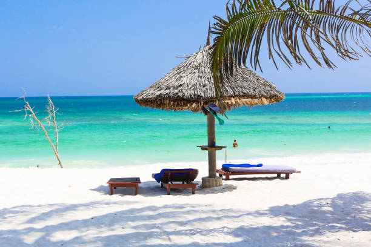

Beaches
Crystal waters, golden sands, and endless sunsets
 Beach
Beach
Diani Beach
📍 Kwale County, Kenya
Diani is a world-class tropical beach stretching 17 km along the Indian Ocean coast. Its powdery white sand and warm turquoise waters make it one of Africa's most celebrated beach destinations, lined with swaying palms and vibrant coral reefs.
Activities
🤿 Snorkeling
🏄 Surfing
🐠 Diving
🛶 Boat Tours
🦀 Beach Walks

BeachWatamu Beach
📍 Kilifi County, Kenya
Nestled within a UNESCO Biosphere Reserve, Watamu offers pristine white-sand beaches and one of the most biodiverse marine environments in East Africa. The Watamu Marine National Park teems with green turtles, dolphins, and 600+ fish species.
Activities
🐢 Turtle Watching
🚣 Kayaking
🐬 Dolphin Trips
🎣 Deep-Sea Fishing